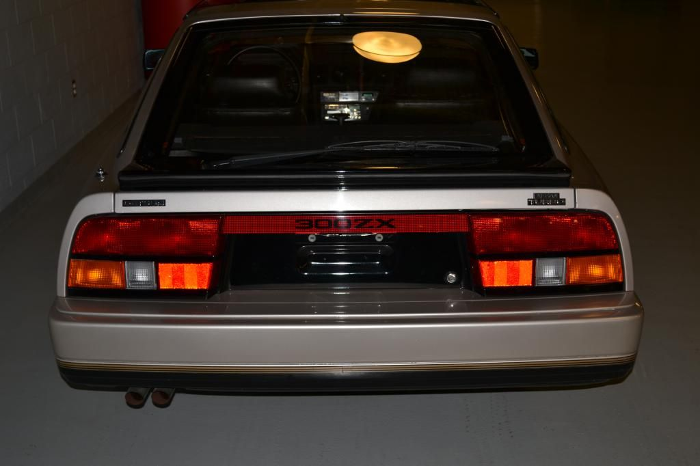

-
I was approached by a friend who works for Nissan North America a couple of months ago to see if I would be interested in restoring the OEM radio/cassette combo out of the AE that Nissan has in their car collection up at corporate in Tennessee. I repaired/refurbished the unit and sent it, along with a set of my repro AE mats (can you believe it?!) back to them today.
A couple of things of interest. The car that this came out of was, what I would consider, a pre-production unit with a 10/83 build date (and approximately 9000 miles on the odometer) as confirmed by Nissan FAST. Regular AE production was from 12/83 to 3/84. Secondly, the Clarion unit had serial number 0000032 which is the lowest I've ever seen in almost ten years of restoring these units.
I was quite surprised that none of the 120-plus electrolytic capacitors were leaking and/or bad; I was equally surprised that neither of the cassette deck mechanism belts had turned to goo, although I replaced the capstan belt just for caution sake. The main/tuner board was bad and I was not able to repair it but I swapped in a rebuilt spare parts board and replaced the LCD display unit which brought her back to good working order.
There was no FCC sticker or cabling diagram on the chassis (like the regular production units); there were also some subtle differences on some of the printed circuit boards like hard wired-in discrete components here and there and cut traces, jumpers, etc.
I really feel like it was an honor to be asked to do this; I am proud, thusly, of my contribution to keep an "early" AE working as it should.
Greg -
That's quite an achievement man, and a strong testament to your skill.
84 AE/Shiro #683/Shiro #820/84 Turbo -
 Restore it, Don't crush it. They don't make them like this anymore.
Restore it, Don't crush it. They don't make them like this anymore.
Scott
85 Turbo, original owner, restored
93 NA Babied

-
I have seen this AE you speak of twice in person. Cleanest AE extant. First time I saw it it was at Nissan's then corporate HQ in Gardenia, California in 2004. Second time I saw it was last year at the Lane Motor Museum in Nashville in the basement along with a multitude of older Nissan concept cars and pre-production models. Lane Motor Museum houses several of Nissan HQ cars since they lack the space at their HQ in Franklin.
Congrats on job well done!
I wonder what they think of the repro mats?
1986 300ZX Turbo…sold
1990 Skyline GT-R…new money pit
2014 Juke Nismo RS 6-speed…daily -
Agreed. Great work, and an honorZ_Karma;346032 wrote: That's quite an achievement man, and a strong testament to your skill.86na - BlueZ
Shiro #366 - Kouki Monster
85t - Mr Tickles -
Great Job! Thank You for sharing these details with the Z31 community. I love learning learning the history behind our cars.
I believe atmospheric Ozone is the chief contributor to the rubber belt degradation. Do you work on other electronics?Everything is Meaningless. -
Congrats. Are there any pics around of said AE?Shiro #443

-
I have a few. I have to dig them up. Couldn't get real good pics since the cars are packed in like sardines.Rick88ss;346142 wrote: Congrats. Are there any pics around of said AE?
1986 300ZX Turbo…sold
1990 Skyline GT-R…new money pit
2014 Juke Nismo RS 6-speed…daily -
I was promised pics of the car once the radio was received back at Nissan and installed.Rick88ss;346142 wrote: Congrats. Are there any pics around of said AE?
Greg -
I work on all kinds of electronics. Was a 35mm SLR camera (before digital) and Sony 8mm camcorder bench tech for most of the 90's. Had a seven year stint with Bellsouth (now AT&T) as a T-1 tech, four year stint with Dave & Buster's maintaining all of the arcade games in the store I worked at, and now back as a bench tech working on Telco switching equipment.PulseCode;346140 wrote: Great Job! Thank You for sharing these details with the Z31 community. I love learning learning the history behind our cars.
I believe atmospheric Ozone is the chief contributor to the rubber belt degradation. Do you work on other electronics? -
And now I know who to go to when I need mine restored. -
Here are some pics of the pre-production AE at Nissan corporate that I recently restored the AE radio out of and sold them a set of my repro floor mats:

-
I see it's been around the block a few times… 10k
-
So Greg, when do I send you mine?? It is the time and I have the $$$.

Copyright © 2006–. All rights reserved. Privacy Policy